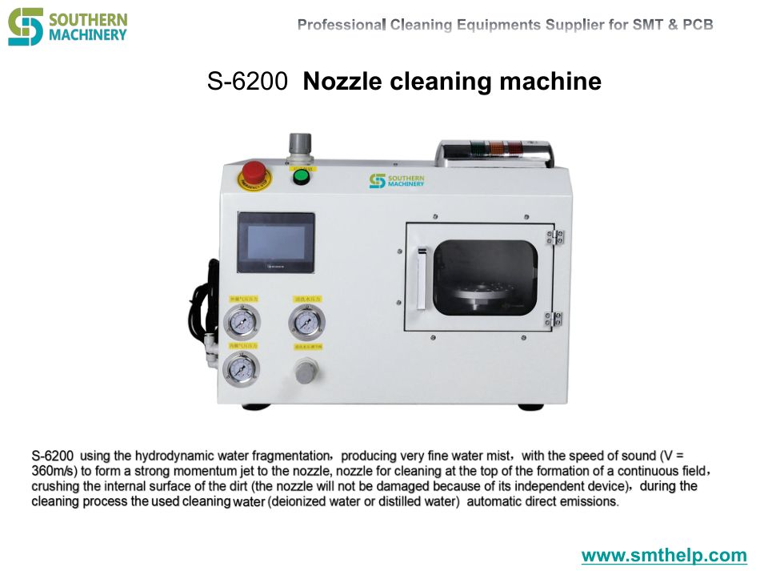
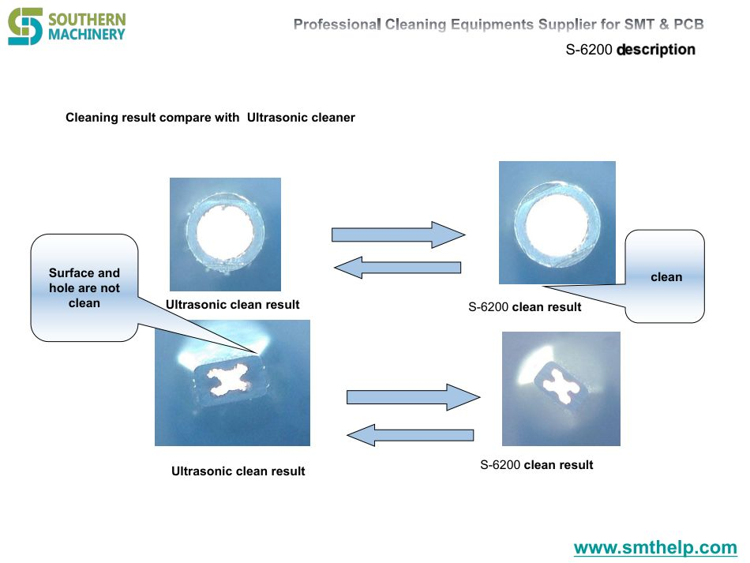
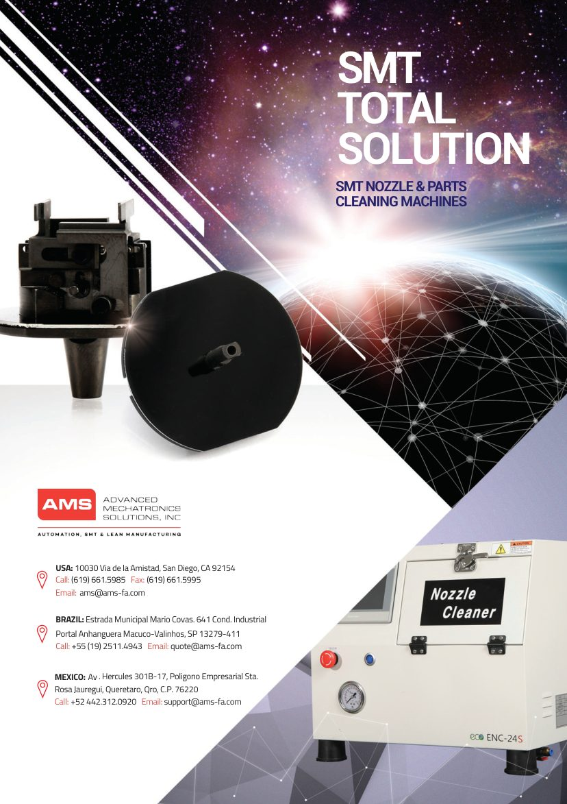
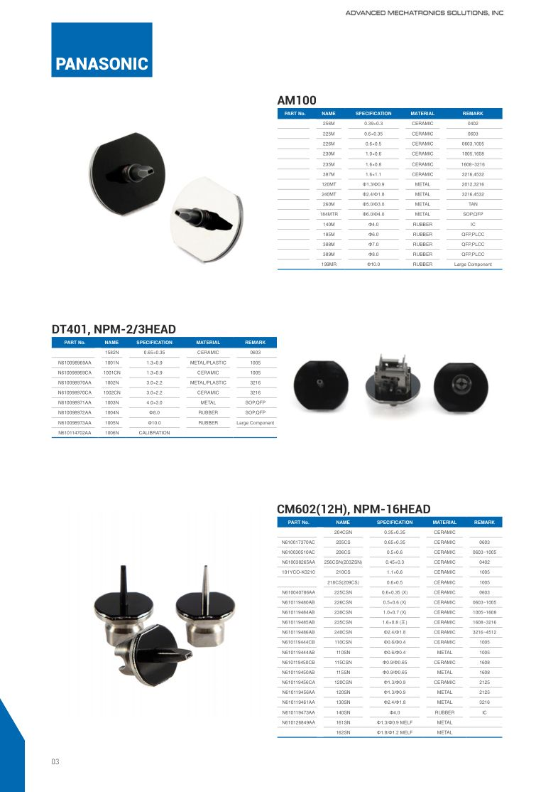
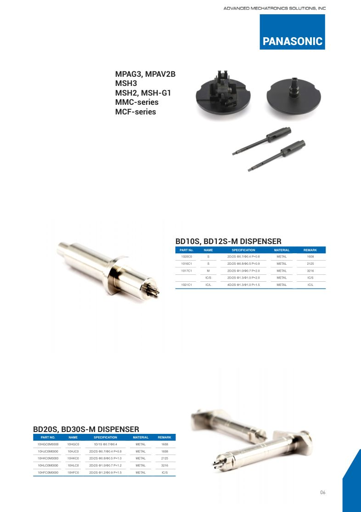
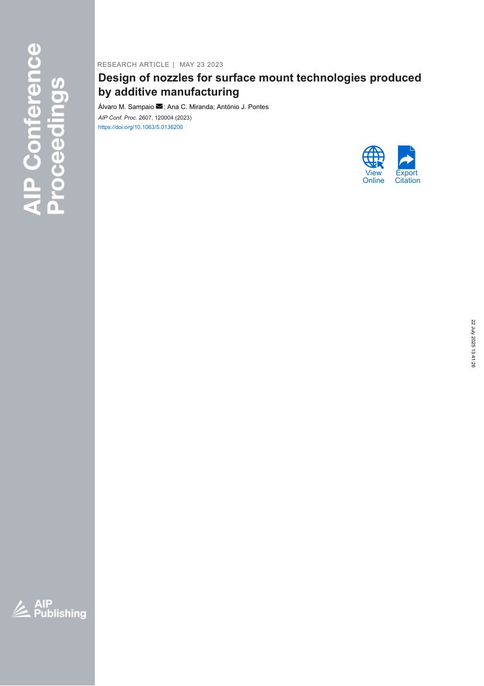

Dirty nozzles fail quietly
Contaminated nozzles drop parts and leave residue — failures that appear only in yield reports.






SMT nozzle supply · Cleaning & total solution
Keep your nozzle fleet clean and productive — the S-6200 cleaning machine plus a full SMT nozzle and parts solution in one program.
Hydrodynamic cleaning at 360 m/s · Deionized or distilled water · No nozzle damage · Full SMT nozzle and parts supply.
The hidden cost of dirty nozzles
Every unplanned nozzle swap and every residue-contaminated board costs money. A planned cleaning routine changes that math.
Contaminated nozzles drop parts and leave residue — failures that appear only in yield reports.
Hand-cleaning with tools scratches nozzle tips and shortens their life.
Without scheduled cleaning, nozzles fail mid-shift and stall the line.
Poor cleaning leaves flux residue that contaminates the next boards.
Nozzles, parts and cleaning bought from different vendors create chaos.
Nozzles that are not cleaned and maintained wear out faster.
Feature · Advantage · Benefit
Select a feature to connect the verified capability with its technical advantage and the practical benefit your factory feels.
Cleaning power that reaches inside the nozzle.
S-6200 uses hydrodynamic water fragmentation producing a fine mist that jets at the speed of sound (V = 360 m/s) onto the nozzle.
A continuous high-momentum field crushes internal surface dirt.
Thoroughly cleaned nozzles place reliably again.
Cleaning jet velocity — sound-speed water mist (reference).
Nozzle damage during cleaning, by independent device design.
Reference nozzle service life, extended by planned cleaning.
Supplier for nozzles, parts and cleaning.
Source-verified technical data
Values support initial evaluation and remain subject to final technical confirmation against your feeder cart and tape formats.
| Cleaning principle | Hydrodynamic water fragmentation producing very fine water mist |
|---|---|
| Jet velocity | Speed of sound, V = 360 m/s, forming a strong momentum jet |
| Cleaning effect | Continuous field on the nozzle top; crushes internal surface dirt |
| Nozzle safety | Nozzle not damaged thanks to its independent device design |
| Water type | Deionized water or distilled water |
| Waste handling | Used cleaning water automatically emitted |
| Nozzle supply | JUKI serials, Yamaha, Fuji, Panasonic, Samsung, Siplace compatibles and custom designs |
|---|---|
| Parts | SMT nozzle parts and consumables |
| Cleaning machines | S-6200 and related cleaning equipment |
| Support | Part matching, custom design and rapid technical follow-up |
S-6200 data from the Southern Machinery S-6200 catalogue; program data from the SMT Total Solution catalogue. Cleaning parameters and nozzle life claims are reference values confirmed against your nozzle types and usage.
Product & catalogue visuals
Click any image to enlarge. Views cover the S-6200 and the SMT Total Solution catalogue pages.
Optional online media
Videos load only after you select them, keeping this page lightweight. All clips are from the official Southern Machinery YouTube channel.
Improving pick-and-place with nozzle cleaning.

How customized nozzles are designed and manufactured.

How nozzles and feeders are designed and manufactured.

SMThelp specialized in SMT nozzle design and manufacturing.
You are offline. The product presentation remains available; videos can be loaded when a connection is restored.
From fleet review to cleaning routine
We confirm the cleaning plan and solution scope before you commit.
Share your nozzle types, volumes and cleaning needs.
Cleaning plan and solution scope confirmed within 24 hours.
S-6200 setup plus nozzle and parts scope for your fleet.
Machine commissioned and operators trained on the cleaning routine.
Spares, consumables and rapid technical follow-up.
Technical evaluation FAQ
It uses hydrodynamic water fragmentation to produce very fine water mist, jetted at the speed of sound (V = 360 m/s) to form a strong momentum jet that crushes internal surface dirt on the nozzle.
No — the independent device design ensures the nozzle is not damaged during cleaning, so the process extends nozzle life instead of shortening it.
Deionized water or distilled water, with the used cleaning water automatically emitted after the cycle.
Cleaning intervals depend on your flux and usage; a planned routine keeps the fleet at peak pickup performance and is confirmed during technical consultation.
SMT nozzles (JUKI serials, Yamaha, Fuji, Panasonic, Samsung, Siplace compatibles and custom designs), parts and cleaning machines — one program for the whole nozzle lifecycle.
Email info@smthelp.com or WhatsApp +86 136 0256 2576 with your nozzle types, volumes and quantity. Quotation and delivery schedule are provided after technical confirmation — typically the same working day.
Next step
Tell us which nozzles you run, how often you change them and your cleaning needs. We reply with a solution scope, quotation and delivery schedule.